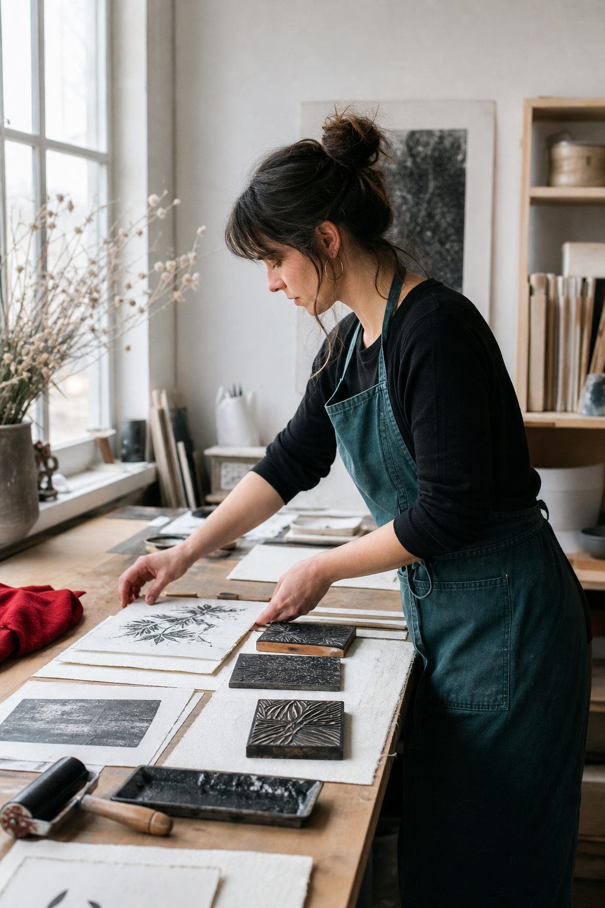

Ink, pressure, and the patience of repetition.
Printmaker Mara Seno works slowly by design. Each block is cut by hand, proofed in daylight, and revised until the image carries the grain of the material.
“The press records every decision, including the ones I thought nobody would see.”
